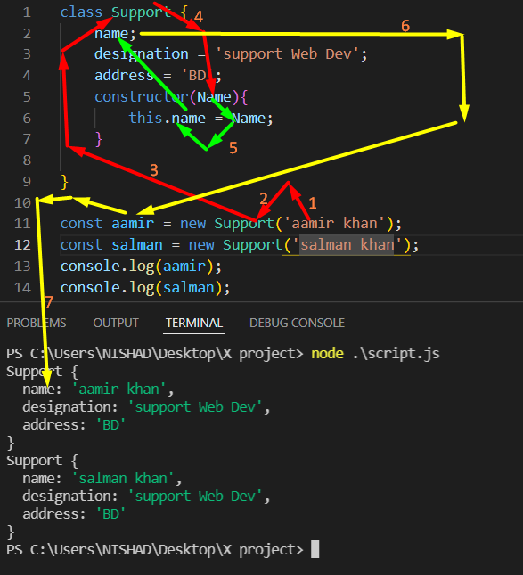

js class হল একটা কাঠামো , যার মধ্যে একই বৈশিষ্ট্য সম্পন্ন xyz দের বৈশিষ্ট্য বর্ণনা করে একটা কাঠামো বানিয়ে রাখা যায় ।
পরবর্তীতে সেটাকে dynamic ভাবে যেকোনো value এর মান পরিবর্তন করে প্রযজনিয় কাঠামো পাওয়া-যায় ।
class এর মুল কাজ হল object বানানো ।
js class এর মধ্যে function লিখা যায় , কিন্তু function keyword টা লিখতে হয়না ।
নাম দেওয়া যায় তবে নামটা constructor-ই হতে হবে , অন্য নাম দিলে হবেনা ।
তারপর যেই যেই জিনিস গুলা class থেকে object বানানোর জন্য dynamic ভাবে সেট করতে চাই সে গুলাকে parameter হিসাবে নিতে হবে ।
Class এর ভেতরের কোন property কে acces করতে হলে this ব্যেবহার করতে হয় ।
কোন class থেকে object বানাতে হলে ,
একটা variable নিতে হবে ।
তারপর , নতুন একজনের কোন বৈশিষ্ট্য যেহেতু দিবো তাই support কে কল করার আগে new লিখতে হবে ।
ex:- (______const xyz = new Support(parameter);_____)
Support এর ্মধ্যে কোন parameter দিলে সে সাথে সাথে constructor কে call করে ।

এইযে class দিয়ে যেটা করে , মুলত সেটা function দিয়েই করে , কিন্তু উপর দিয়ে মনে হচ্ছে এটা class দিয়ে করা হচ্ছে
এই জন্য এটাকে বলে ___ Syntactical Sugar ___ ,, অনেক সময় কেকের উপরে চিনির একটা প্রলেপ দেয় যে ,
যা দেখে মনে হয় ভেতরের জিনিস ভেতরে ঠিক আছে শুধু উপরে একটু প্রলেপ দিয়ে দেওয়া হয়েছে ।